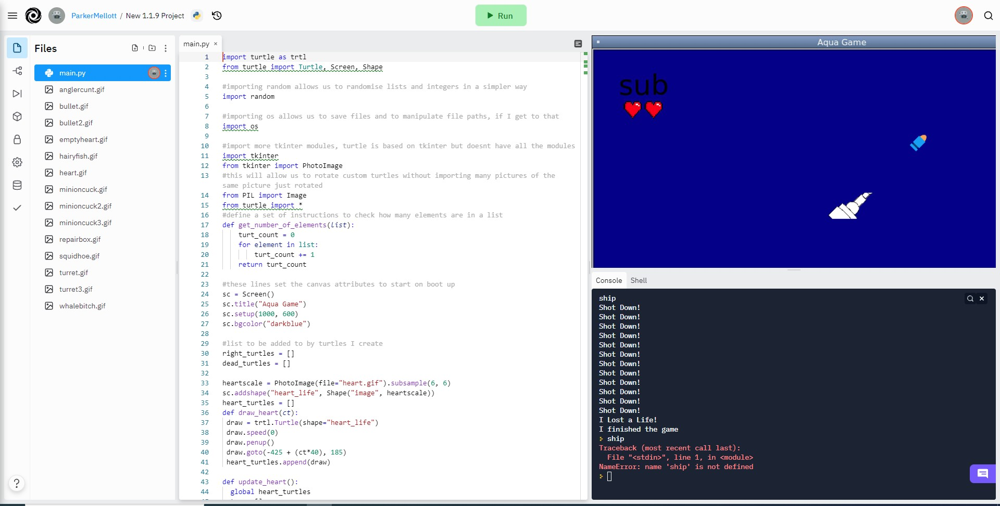
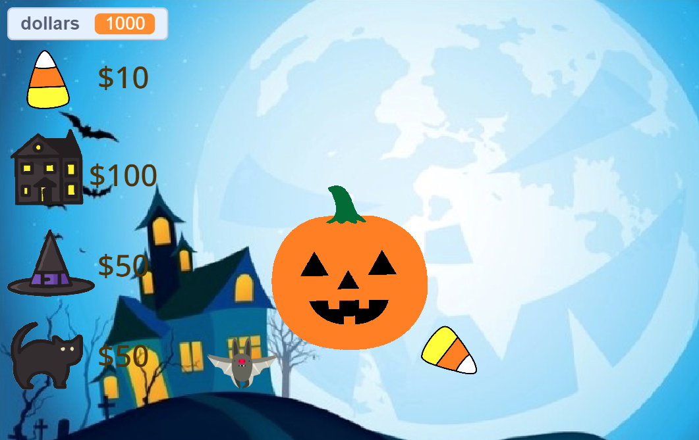
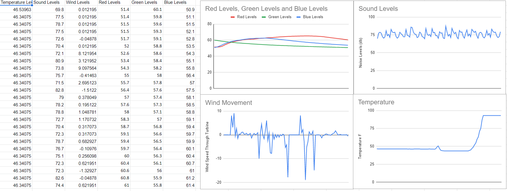

1.1.9 Tower Defense Game
This is a screenshot of the game we made! We first needed to decide on an idea for the game, originally I wanted to create a casino type of game utilizing the new methods we learned to create shuffling algorithms and statements to find out who won. But after talking to my partner, Timothy, we decided that it would be more interesting to create a tower defense game with a bit of a storyline to it, this is much more complicated and uses things that we technically haven't learned, throwing out python turtle and we are now using pyglet which is a much more robust tool aimed at gaming with some elements that turtle simply cannot accomplish. This includes advanced windowing, allowing for fullscreen modes, which will allow for a much better experience for the player, it also has considerably better key detection which should allow us to interact with the program outside of the terminal prompt which will make the game much more fun to play, this will also allow us to use characters that move around using wasd, which we may integrate into the game to give it an immersive feel. Additionally, the pyglet package comes with sublibraries which should make it much easier to use them without needing to search for more libraries that we need to integrate in, things like pyglet.timer and pyglet.text will make it easier to set up a scene. Lastly, we have the main issue of performance, python as a compiled language already is very slow, turtle adds upon that with the slowness which it moves at, even with the turtle.speed(0) command. Pyglet cuts out the main issue with rendering the entire scene simultaneously which greatly speeds up the entire process. The main way to cut this is creating nearly hundreds of turtles to complete each task, this may be faster, but assigning tasks for each turtle to do is very tedious and leads to long and confusing code.The Forgotten Creatures of the Appalachian Depths are fighting the B-69 research team that was doing exploration at the bottom of a new found sea, they are met with waves of fierce creatures that are attempting to destroy the ship that they are in. This leads them to take out their emergency defense mechanisms that are pre mounted on the ship, they are deployed, but are weak at their first deployment as they are rusty and untested, however, through sucking in the dunleaum in the fish they are able to magically upgrade their defense mechanisms, this can be used on all sorts of equipment including the turrets, forcefield, dunleaum generator, dunleaum vault, and fish research.
1.2.6 Backjack

The second project is Blackjack. The first screen that you see is the betting screen, which allows you to place your bet for the current round. There are 5 buttons on this screen that each set a different bet amount to the bet variable, a bet 10 button, a bet 20 button, a bet 50 button, a bet 100 button, and a custom bet button that allows you to set the bet to whatever value you want. Once you set your bet amount, your hand is dealt and so is the dealer's hand. There are two more buttons on this screen that allow you to either "hit" or "stand." The hit button draws another card and after drawing said card, the check_blackjack() and check_bust() functions are run. These two functions make sure that the user does not have 21 or more because if the user has 21, he has blackjack, and if he has over 21, he busts and loses his bet. When clicked on, the stand button compares the values of the dealer and player's hands. According to what it determines, the user's bet is multiplied by a predetermined amount based off the rules of blackjack. This value is then either added or subtracted from the bank account text file which holds the amount of money the player has.
Scratch Pumpkin Clicker Game
For the scratch game, I showed up late from my partners, and therefore I had no say in the type of game, however I did my best to make a clean looking game as possible, with clean animations that are aesthetically pleasing and the candy corn moving around the screen to provide motion and to show the amount that you have. I think that although this game is simple for the end user, it was very complex to make everything. For the icons we found them online and removed the backgrounds.
3.1.6 Big Data Project
We have concluded that Desert Plains is the correct biome because all of the data fits almost exactly between the two. With temperature that rises quickly between what is probably night and day time. The biggest discrepancy is the sound levels which are always moving up and down, which makes sense because they are chirping, but an almost 80 db average is quite loud, but it is an alien planet so the creatures could be quite loud. The wind movement or pressure also fits because the rover is probably moving around, so if it turns around then the wind speed would be inverted, and the wind is always blowing though and this matches up with the winds which are constant and vary with regularity which makes sense.